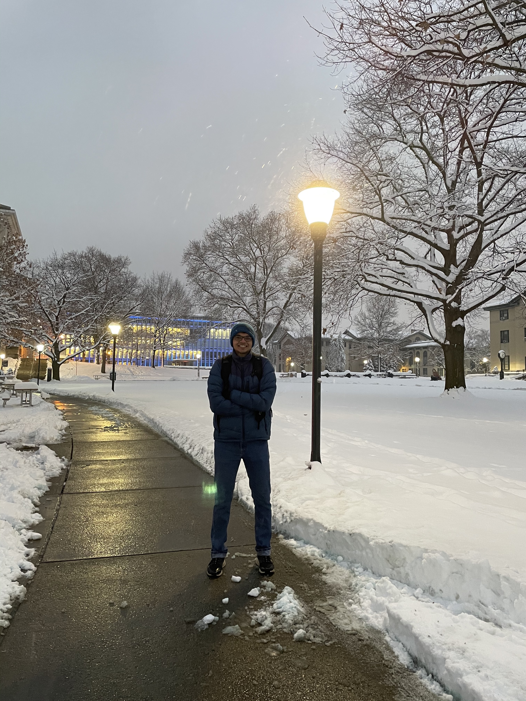

Hi, I'm Advait.
Researcher at Qualcomm AI Research
I am a researcher at Qualcomm AI Research working on model efficiency. Before that, I spent some time working at Microsoft Research India on efficient retrieval models. I completed my PhD at the CISPA Helmholtz Center for Information Security in Saarbrücken, where I was advised by Dr. Rebekka Burkholz. My research focused on building provable algorithms for deep learning, with a particular focus on sparse training, quantization and efficient optimization methods in general.
I completed my Master's from the ECE Department at Carnegie Mellon University, where I worked with the Optimization, Probability and Learning Group (OPAL) advised by Prof. Gauri Joshi on optimization algorithms with theoretical guarantees for large-scale machine learning systems.
Prior to CMU, I was an undergraduate at BITS Pilani, India. For my bachelor's thesis, I had the privilege of working with Prof. Rajiv Soundararajan at the Indian Institute of Science on designing Image Quality Assessment models that perceive images similarly to the Human Visual System.
Feel free to reach out if you want to chat :)
Recent
- Nov 2026Defended my PhD thesis at CISPA.
- Oct 2026Joined Qualcomm AI Research as a researcher, working on model efficiency.
- Sept 2026Gave an invited talk to high school students at Fergusson College, Pune.
- May 2026Joined the ReFoRM team at Microsoft Research India, working on efficient retrieval models.
Selected papers
- NeurIPS 26Prune to Protect: Faster Training and Enhanced Privacy by Dynamic Data Pruning
- NeurIPS 25OptRot: Mitigating Weight Outliers via Data-Free Rotations for Post-Training Quantization
- NeurIPS 25Pay Attention to Small Weights
- NeurIPS 25Sign-In to the Lottery: Reparameterizing Sparse Training From Scratch
- ICLR 24Masks, Signs, and Learning Rate Rewinding